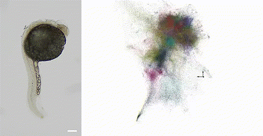

Research
Unanticipated technologies can blossom from seemingly unrelated developments. Solid-state quantum theory gave us the transistor; the economics of video-gaming gave us scaling in GPU production which, in turn, precipitated the achievability of modern AI. In 2019, we demonstrated the capacity for the newest generation of DNA sequencing methods to do something qualitatively similar for the way we probe living systems.
Take the following simple example. Let’s say that you want to map the locations of every person on the surface of the earth. There are two ways you can imagine approaching this problem. One is, you can send up a satellite around the earth and take photographs. Two is, you can look at the Bluetooth pings between individuals’ mobile phones. If you record enough of those pings, you can reconstruct everyone’s relative positions without prior knowledge (or a map). Above: A 24-hour post-fertilization zebrafish embryo (right) imaged from the "inside-out", complete with nucleotide-level genomic detail (each of the 3.8 million points displayed is an individual RNA or DNA molecule). Assembled from a stand-alone volumetric DNA microscopy reaction of specimen on the left (scale bar 200um).
DNA Microscopy
DNA microscopy achieves this for biomolecules, instead of people. In short, in DNA microscopy, rather than using a large apparatus to zero in on specific locations within the sample, we deploy a massive mix of random, artificial DNA molecules, that give each biomolecule its own unique molecular identity (a molecular IP address).

We then turn these molecules into a massive intercommunicating network that goes to work encoding molecular proximities across the specimen (in cells or tissue) into brand new DNA sequences. Reading these proximities out by high-throughput DNA sequencing, and applying advances in numerical computing, we can infer an image of the original sample.
Publications
- Qian N, Weinstein JA. "Volumetric imaging of an intact organism by a distributed molecular network." bioRxiv. 2023 Aug 14. (pre-print)
- Weinstein JA, Regev A, Zhang F. "DNA microscopy: Optics-free spatio-genetic imaging by a stand-alone chemical reaction." Cell. 2019 Jun 27. (paper, pre-print)
- Vollmers C, Sit RV, Weinstein JA, Dekker CL, Quake SR. "Genetic measurement of memory B-cell recall using antibody repertoire sequencing." Proc Natl Acad Sci USA. 2013 Jul 29. (paper)
News & Media
- 2021 Damon Runyon Innovation Award Announcement (January 11, 2021)
- 2020 Moore Inventor Fellow Announcement (September 16, 2020)
- Discover Magazine (December 21, 2019) - #33 in "Top science stories of 2019"